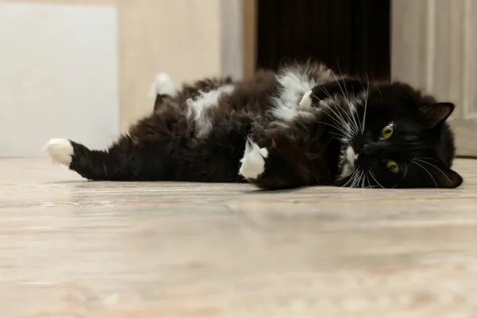

La apariencia de un gato bobtail americano suele resultar muy amable y atractiva, siendo otra de las razas de gatos más populares del mundo.
La raza se caracteriza por tener un cuerpo mediano, pero algo robusto, con una postura notablemente rectangular, y patas traseras más largas que las delanteras. Además, posee una cola pequeña, tanto en relación a su cuerpo como en comparación a las otras razas felinas.
La anatomía humana es una de las ciencias básicas o preclínicas de la medicina.2 Al científico que ejerce y estudia esta ciencia se le denomina anatomista, el Diccionario de la lengua española de la Real Academia Española también acepta el término anatómico.
No obstante, su popularidad no se debe a la hermosura de su cuerpo, sino a su carácter activo, inteligente y sociable. Un excelente animal de compañía para quien disfruta con los juegos y largos ratos divertidos con su compañero fiel.

FIN